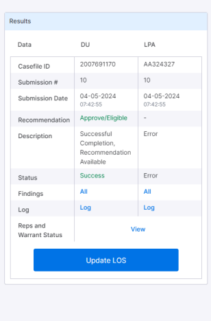
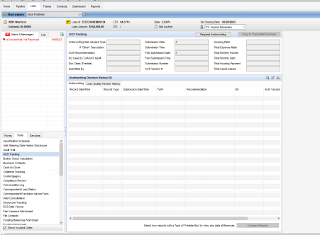

UPDATE LOS BUTTON
Update LOS Button
- Users can update specific field values that have been modified, as well as the Rep and Warrant tracker form and PDF in Efolder to the encompass directly from the result section by clicking the "Update LOS" button.
Rep and Warrant
- The Rep and Warrant feature compares the results and status of both DU and LPA.
- To view the PDF, users can click on "View" next to Rep and Warrant in both the Submit Scenario and Previous Submission sections.
AUS tracking
On successful scenario run of DU/LPA/Both DU/LPA, an entry in the AUS tracking will be updated in the encompass.
